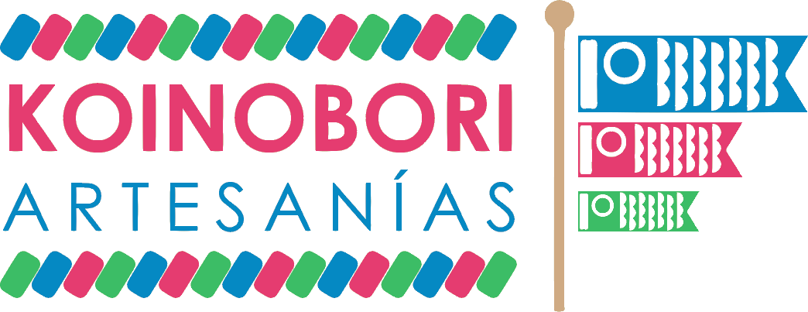

<!--
  Generated template for the AjustesPage page.

  See http://ionicframework.com/docs/components/#navigation for more info on
  Ionic pages and navigation.
-->
<ion-header>
  <ion-navbar>
    <button ion-button menuToggle >
      <ion-icon name="menu"></ion-icon>
    </button>
    <ion-title>Ajustes</ion-title>
  </ion-navbar>
</ion-header>


<ion-content class="colorFondo" padding>
  <form ion-grid fixed>
    <ion-row justify-content-center padding-bottom>
      
      
    </ion-row>

    <ion-row class="paddingBottomM centrarG">
      <p ion-text color="rosa" padding-left no-margin>
          <b>Elige una opci&oacute;n:</b>
      </p>
    </ion-row>

    <ion-row justify-content-center padding-horizontal >
      <div ion-col col-12  col-sm-6 class="colorFondo">
        <button  ion-button full icon-left color="verde"
          class="sombra" (click)="goToCambioPass()" >
            <ion-icon name="create"></ion-icon>
            Cambiar Contrase&ntilde;a
        </button>
      </div>
    </ion-row>

    <ion-row justify-content-center padding-horizontal >
      <div ion-col col-12  col-sm-6 class="colorFondo">
        <button  ion-button full icon-left color="danger"
          class="sombra" (click)="eliminarCuenta()" >
            <ion-icon name="trash"></ion-icon>
            Eliminar Cuenta
        </button>
      </div>
    </ion-row>
  </form>

</ion-content>
